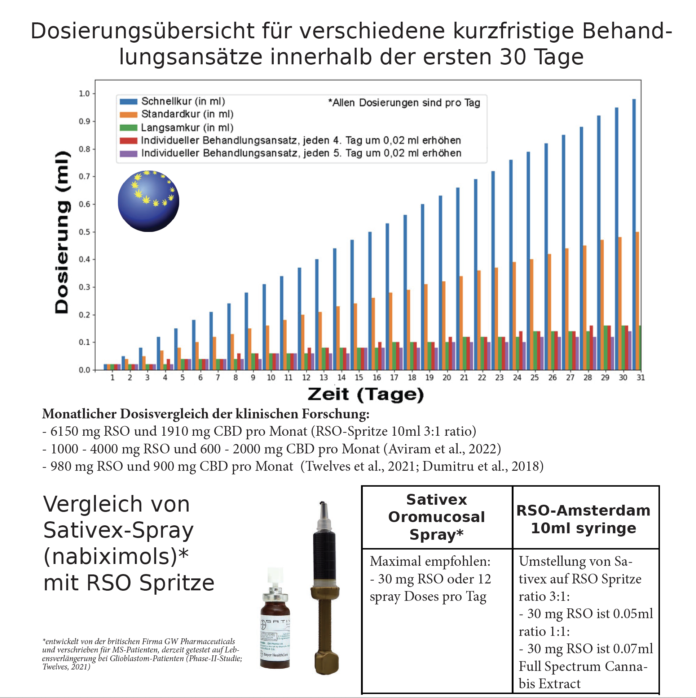
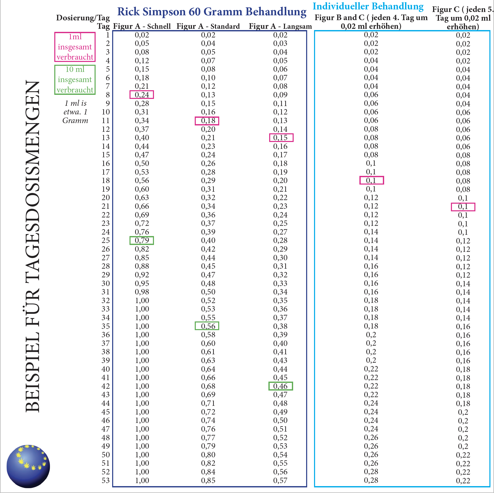
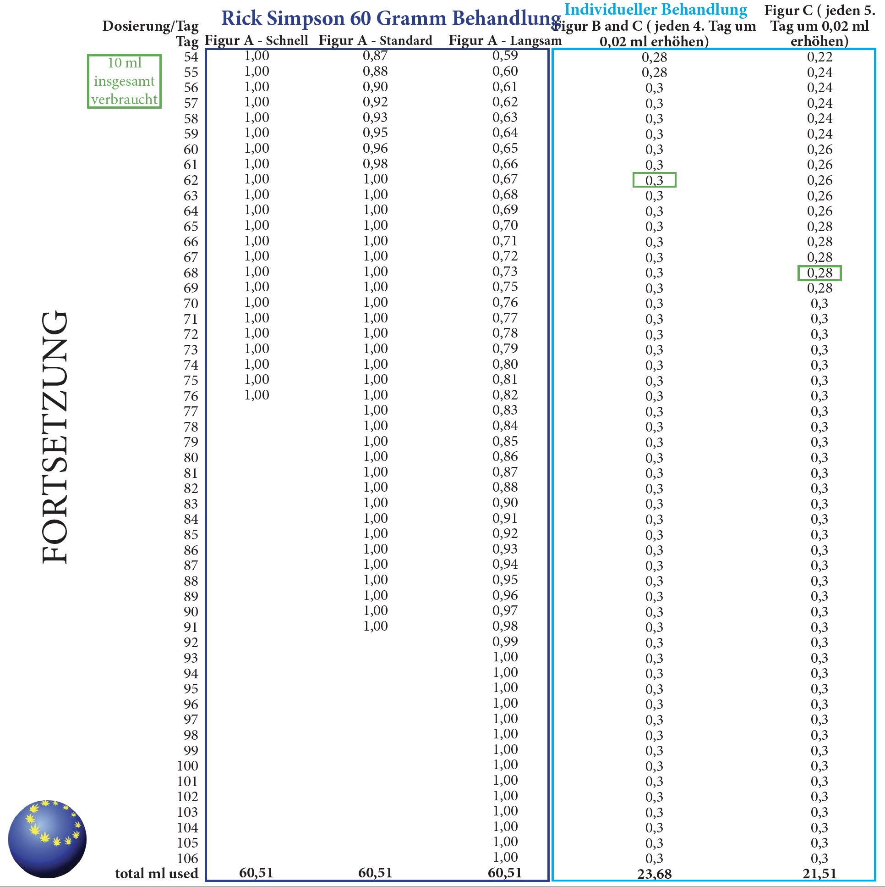
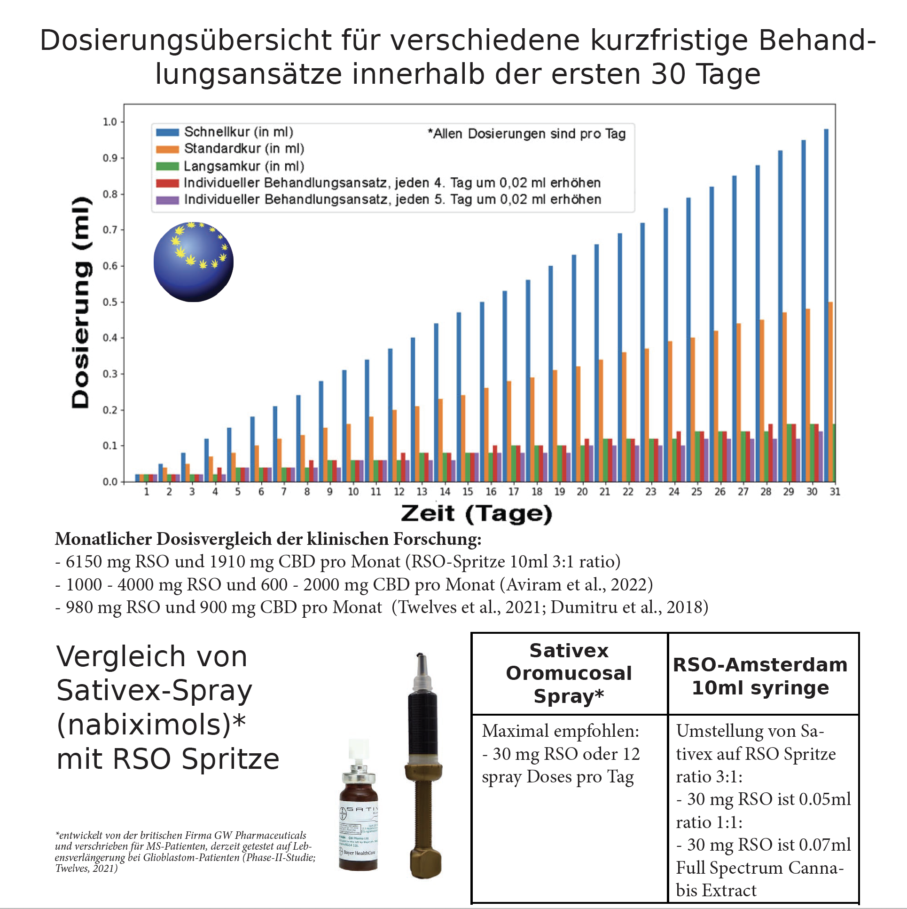
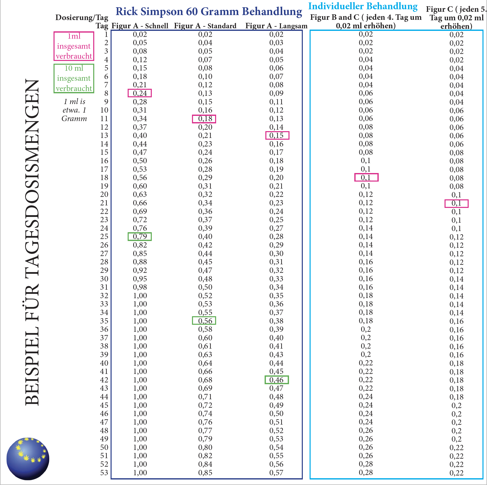
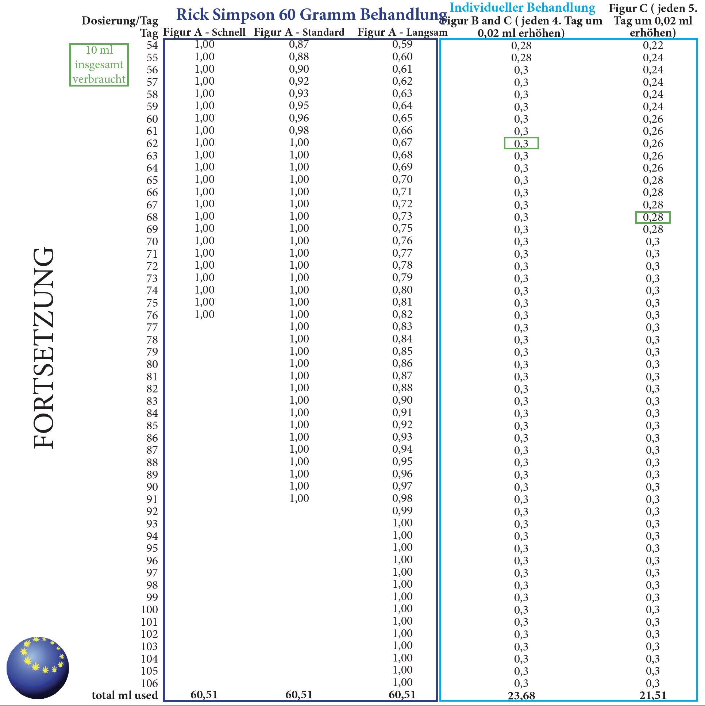

Einführung in die Verwendung von Cannabinoiden
THC ist sehr wirksam gegen Schmerzen, aber in der richtigen Menge. Viele Forschungen im Labor und mit Tieren zeigen positive Langzeiteffekte. Die Hypothese ist, dass die Ergebnisse umso besser sind, je mehr Cannabinoide Ihr Körper zu sich nimmt. Die empfohlene Dosierung mit RSO-Produkten besteht jedoch darin, mit einer geringen Menge zu beginnen und die Tagesdosis schrittweise zu erhöhen, bis die gewünschten Ergebnisse erzielt werden. Dadurch kann Ihr Körper eine Toleranz gegenüber möglichen Nebenwirkungen aufbauen und gleichzeitig die Vorteile von Cannabinoiden nutzen. CBD kann die Nebenwirkungen von THC abmildern, daher bevorzugen manche Patienten eine gleiche Menge THC und CBD.
Personalisieren Sie Ihre Dosierung
Wir empfehlen, Ihre Dosierung für jedes Produkt zu personalisieren (da die Wirkung bei jeder Person anders sein wird). Beginnen Sie mit einer geringen Menge und erhöhen Sie die Dosis schrittweise, bis die gewünschten Ergebnisse erzielt werden. Auf diese Weise können Sie bei Bedarf problemlos auf einen früheren niedrigeren Betrag zurückgreifen.
Verwendung von RSO-Öl
Lassen Sie das Öl vor der Verabreichung auf Raumtemperatur kommen. Legen Sie die Spritzen in ein warmes Wasserbad, wenn Sie Schwierigkeiten haben, das Öl zu extrahieren (stellen Sie es nicht in eine Mikrowelle).
Als Nahrungsergänzungsmittel ein- oder zweimal täglich verwenden. Das Öl kann oral eingenommen werden, indem man das Öl für ein paar Minuten unter die Zunge legt. Beginnen Sie in der ersten Woche mit einer kleinen Menge von 0,02 ml. In der zweiten Woche könnten Sie versuchen, die Menge langsam aufzubauen und zu erhöhen und sie unter die Zunge zu legen, wo Sie sie vor dem Schlucken für ±60 Sekunden halten müssen, um so viel wie möglich in Ihren Blutkreislauf aufzunehmen.
Rick-Simpson-Behandlung
Rick Simpson machte die Behandlung von Cannabis gegen Krebs populär, indem er 60 Gramm oder 60 ml in 90 Tagen verwendete. Figur A zeigt ein Beispiel für einen schnelleren und langsameren Ansatz für diese beliebte Behandlung.
Außerdem ermöglicht Figur B und C einen persönlicheren Behandlungsansatz, der bequemer ist.
 





{kind=link}
{kind=link}
{kind=link}


Einsetzen der Wirkung
Das RSO-Öl hat einen Wirkungseintritt von etwa 0,5 bis 1 Stunde und eine Spitzenwirkung bei 2 bis 4 Stunden. Auch etwa die Hälfte der täglichen Einnahme sollte am besten vor dem Schlafen erfolgen. Die Wirkungsdauer für psychoaktive Effekte beträgt 4 bis 6 Stunden, aber die appetitanregende Wirkung kann 24 Stunden oder länger nach der Verabreichung anhalten. Schläfrigkeit, Müdigkeit und Schläfrigkeit sind eine normale Reaktion. 8 bis 10 Stunden am Tag zu schlafen ist ebenfalls normal. Wenn Sie sich nach der Einnahme nicht wohl fühlen (Übelkeit oder Schwindel), können Sie ein Glas Wasser mit Honig oder etwas Süßem zu sich nehmen. Dies hilft, sich schneller von Übelkeit oder Schwindel zu erholen, die durch den plötzlichen niedrigeren Blutdruck nach der Ölaufnahme verursacht werden. Wenn dies jedoch nicht ausreichend hilft, nehmen Sie am besten einige Tage lang eine niedrigere Dosis, bevor Sie sie wieder erhöhen.
Andere Verabreichungsformen sind:
- Schmierung auf der Haut (die gleiche Stelle 7 Tage lang meiden).
- Das Öl kann zusammen mit Essen und/oder Getränken eingenommen werden.
- Rektale Verabreichung.
Tinkturen
Wie benutzt man
Lassen Sie das Öl vor der Anwendung auf Raumtemperatur kommen. Legen Sie die Flasche in ein warmes Wasserbad. wenn Sie Schwierigkeiten haben, um das Öl zu extrahieren (Nicht in die Mikrowelle platzieren).
Wir empfehlen, Ihre Dosierung zu personalisieren (weil die Wirkung bei jeder Person anders ist),
Beginnen Sie mit einer geringen Menge (1 bis 5 Tropfen pro Tag) und erhöhen Sie die Dosis schrittweise, bis die gewünschten Ergebnisse erzielt werden (bis zu maximal 15 Tropfen pro Tag).
Unsere Produkte können sublingual eingenommen werden oder kombiniert mit Lebensmitteln. Auch kann dass Ol auf Ihren Haut geschmiert werden.
Auf diese Weise können Sie bei Bedarf zu einem früheren niedrigeren Betrag zurückkehren.
Als Nahrungsergänzungsmittel ein- oder zweimal täglich verwenden. Das Öl kann oral eingenommen werden,
indem Sie einige Minuten lang ein paar Tropfen unter Ihre Zunge geben.
Beginnen Sie in der ersten Woche mit einer kleinen Menge von wenigen Tropfen pro Tag.
Eine 10 ml Flasche enthält etwa 200-250 Tropfen und hält etwa 4 bis 5 Wochen, abhängig von Ihrer Verwendung und davon, ob Sie die Dosierung erhöhen. Einigen Leute erhöhen die Dosierung schneller als andere. Befolgen Sie zum Beispiel die Dosierung wie oben ist beschrieben
Andere Verabreichungsformen sind:
- Schmierung auf der Haut (die gleiche Stelle 7 Tage lang meiden).
- Das Öl kann zusammen mit Essen und/oder Getränken eingenommen werden.